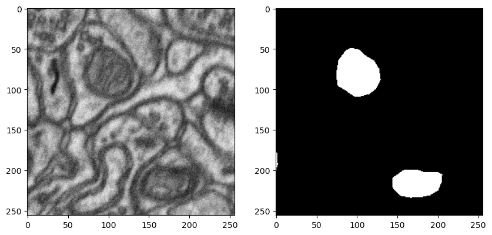
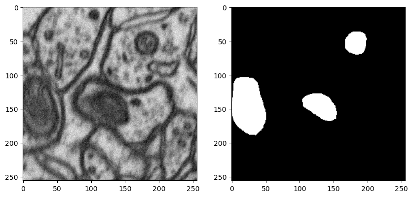

im_path = Path(Path.cwd().parent/'data/patch_images')
msk_path = Path(Path.cwd().parent/'data/patch_masks')
im_path_tst = Path(Path.cwd().parent/'data/test_patch_images')
msk_path_tst = Path(Path.cwd().parent/'data/test_patch_masks')Dataset Preparation
datset preparation
get_dataset
get_dataset (im_path:Union[pathlib.Path,str], msk_path:Union[pathlib.Path,str])
Create a dataset from image and mask path
Dataset from own computer
#test_dataset = get_dataset(
#im_path_tst,
#msk_path_tst,
#)
#test_dataset image has 1725 images
masks has 1725 imagesDataset({
features: ['image', 'label'],
num_rows: 1725
})#dataset = get_dataset(
#im_path,
#msk_path
#)
#dataset image has 1642 images
masks has 1642 imagesDataset({
features: ['image', 'label'],
num_rows: 1642
})#test_eq(len(test_dataset['image']), len(test_dataset['label']))#test_eq(len(dataset['image']), len(dataset['label']))#dataset_dict=DatasetDict({'train':dataset, 'test':test_dataset})#test_dataset.to_parquet(Path.cwd().parent/'data/test_patch_dataset.parquet')84715121show_dataset
show_dataset (dataset)
#show_dataset(dataset) dataset index will be visualized: 224
In case of download data from huggingface
from datasets import load_dataset
dataset = load_dataset("hasangoni/Electron_microscopy_dataset")Downloading readme: 0%| | 0.00/608 [00:00<?, ?B/s]Downloading readme: 100%|##########| 608/608 [00:00<00:00, 3.47MB/s]
Downloading data files: 0%| | 0/2 [00:00<?, ?it/s]
Downloading data: 0%| | 0.00/80.6M [00:00<?, ?B/s]
Downloading data: 5%|5 | 4.19M/80.6M [00:00<00:09, 7.67MB/s]
Downloading data: 16%|#5 | 12.6M/80.6M [00:00<00:04, 16.7MB/s]
Downloading data: 26%|##6 | 21.0M/80.6M [00:01<00:02, 23.1MB/s]
Downloading data: 36%|###6 | 29.4M/80.6M [00:01<00:02, 25.3MB/s]
Downloading data: 47%|####6 | 37.7M/80.6M [00:01<00:01, 27.7MB/s]
Downloading data: 57%|#####7 | 46.1M/80.6M [00:01<00:01, 28.1MB/s]
Downloading data: 68%|######7 | 54.5M/80.6M [00:02<00:00, 29.5MB/s]
Downloading data: 78%|#######8 | 62.9M/80.6M [00:02<00:00, 28.5MB/s]
Downloading data: 88%|########8 | 71.3M/80.6M [00:02<00:00, 30.7MB/s]
Downloading data: 99%|#########8| 79.7M/80.6M [00:03<00:00, 16.9MB/s]Downloading data: 100%|##########| 80.6M/80.6M [00:03<00:00, 21.3MB/s]
Downloading data files: 50%|##### | 1/2 [00:03<00:03, 3.79s/it]
Downloading data: 0%| | 0.00/84.6M [00:00<?, ?B/s]
Downloading data: 5%|4 | 4.19M/84.6M [00:00<00:10, 7.76MB/s]
Downloading data: 15%|#4 | 12.6M/84.6M [00:00<00:04, 15.0MB/s]
Downloading data: 25%|##4 | 21.0M/84.6M [00:01<00:03, 20.0MB/s]
Downloading data: 35%|###4 | 29.4M/84.6M [00:01<00:02, 23.0MB/s]
Downloading data: 45%|####4 | 37.7M/84.6M [00:01<00:01, 23.5MB/s]
Downloading data: 55%|#####4 | 46.1M/84.6M [00:02<00:01, 23.2MB/s]
Downloading data: 64%|######4 | 54.5M/84.6M [00:02<00:01, 20.9MB/s]
Downloading data: 74%|#######4 | 62.9M/84.6M [00:02<00:00, 23.6MB/s]
Downloading data: 84%|########4 | 71.3M/84.6M [00:03<00:00, 22.3MB/s]
Downloading data: 94%|#########4| 79.7M/84.6M [00:03<00:00, 19.3MB/s]Downloading data: 100%|##########| 84.6M/84.6M [00:03<00:00, 21.3MB/s]
Downloading data files: 100%|##########| 2/2 [00:07<00:00, 3.90s/it]Downloading data files: 100%|##########| 2/2 [00:07<00:00, 3.88s/it]
Extracting data files: 0%| | 0/2 [00:00<?, ?it/s]Extracting data files: 100%|##########| 2/2 [00:00<00:00, 1857.53it/s]
Generating train split: 0 examples [00:00, ? examples/s]Generating train split: 1642 examples [00:00, 7759.68 examples/s]Generating train split: 1642 examples [00:00, 7706.02 examples/s]
Generating test split: 0 examples [00:00, ? examples/s]Generating test split: 1725 examples [00:00, 8048.83 examples/s]Generating test split: 1725 examples [00:00, 8000.18 examples/s]datasetDatasetDict({
train: Dataset({
features: ['image', 'label'],
num_rows: 1642
})
})def show_hf_dataset(
dataset:Dataset,
idx:Union[int, None]=None,
split:str='train'
):
"Show hugging face random index"
if idx is None:
idx = np.random.randint(0, len(dataset[split]))
print(f' dataset index will be visualized: {idx}')
im_ = dataset[split]['image'][idx]
msk_ = dataset[split]['label'][idx]
fig, ax = plt.subplots(
1, 2, figsize=(10, 5)
)
ax[0].imshow(im_)
ax[1].imshow(msk_)show_hf_dataset(dataset) dataset index will be visualized: 189
get_bounding_box
get_bounding_box (ground_truth_map)
- Careful here to make difference between torch Dataset and datsets.Dataset
SAMDataset
SAMDataset (dataset, processors)
Creating dataset for SAM training
train_ds = SAMDataset(
dataset=dataset,
processors=processor)#example = train_ds[0]
#for k,v in example.items():
#print(f'{k}: {v.shape}')(256, 256) <class 'numpy.ndarray'>
pixel_values: torch.Size([3, 1024, 1024])
original_sizes: torch.Size([2])
reshaped_input_sizes: torch.Size([2])
input_boxes: torch.Size([1, 4])
ground_truth_mask: (256, 256)#train_dl = DataLoader(
#train_ds,
#batch_size=2,
#shuffle=True
#)#batch = next(iter(train_dl))
#for k,v in batch.items():
#print(k,v.shape)(256, 256) <class 'numpy.ndarray'>
(256, 256) <class 'numpy.ndarray'>
pixel_values torch.Size([2, 3, 1024, 1024])
original_sizes torch.Size([2, 2])
reshaped_input_sizes torch.Size([2, 2])
input_boxes torch.Size([2, 1, 4])
ground_truth_mask torch.Size([2, 256, 256])